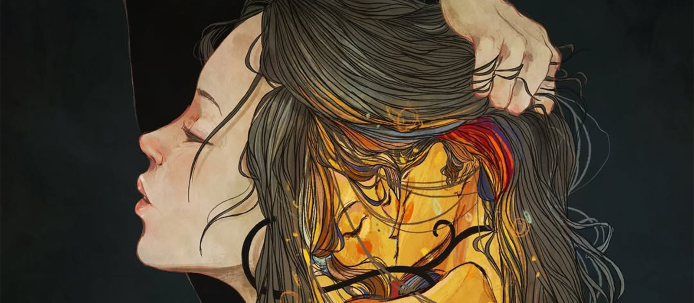
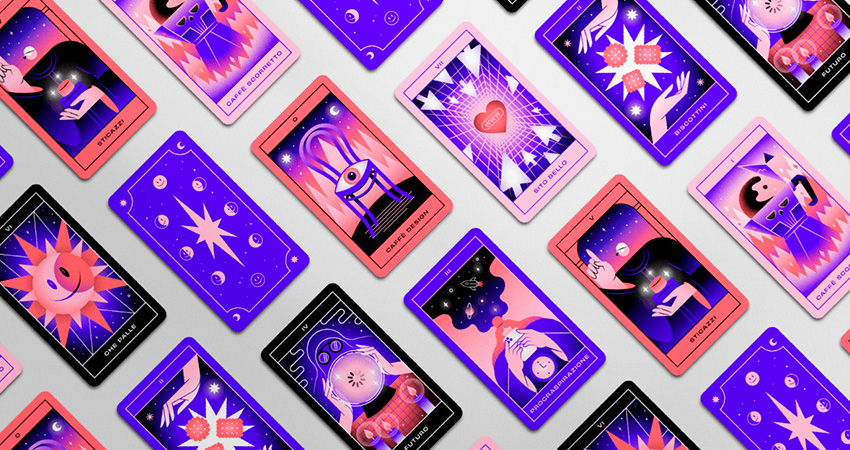
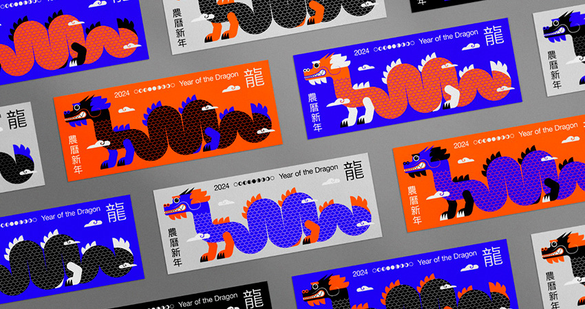
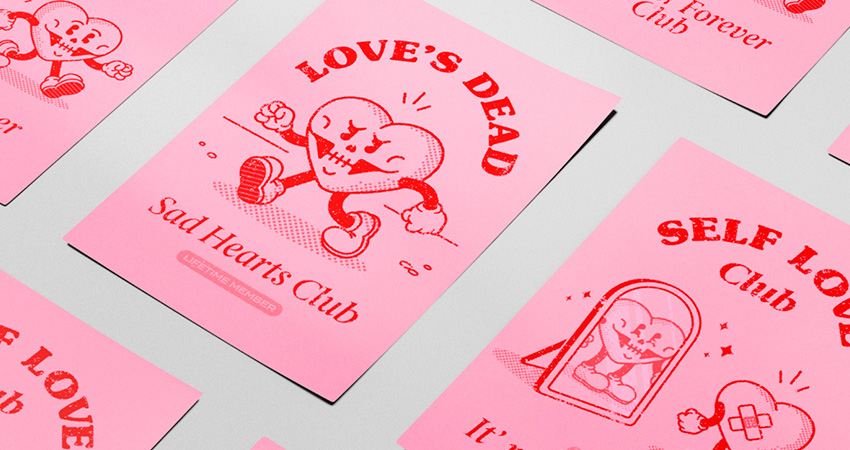

Artistssss
Un archivio curato di arte, design e innovazione visiva.
Storia e stili dell'illustrazione
vai alla pagina
L'illustrazione nasce nella preistoria come rappresentazione di scene di caccia, si sviluppa con gli Egizi e i Romani in ambito religioso e diventa il primo veicolo culturale nell'era carolingia. Con la Rivoluzione Industriale entra nel mondo editoriale, evolvendosi negli anni '60 con l'influenza del design e del cinema. Oggi, grazie a internet e ai social, gli illustratori lavorano in digitale e raggiungono un pubblico globale, attraverso l’illustrazione editoriale, pubblicitaria, Il flat design, attraverso fumetti e graphic novel, e infine con la concept art.
nuovi artisti
vai alla pagina
Ogni mese selezioniamo illustratori che meritano di essere conosciuti. Vai alla pagina "artisti" o esplora tramite la lista qui sotto lo stile unico di:
Opere in evidenza
Scopri la nostra selezione di opere in primo piano di questo mese.




